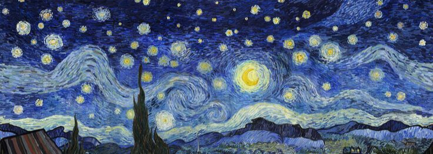

Vincent van Gogh
Autorretrato, 1887
Nome completo Vincent Willem van Gogh
Nascimento 30 de março de 1853
Zundert, Brabante do Norte,
Países Baixos
Morte 29 de julho de 1890 (37 anos)
Auvers-sur-Oise, França
Progenitores Mãe: Anna Cornelia Carbentus
Pai: Theodorus van Gogh
Ocupação Pintor
Treinamento Anton Mauve
Movimento estético Pós-impressionismo
Vincent Willem van Gogh (holandês: [ˈvɪnsɛnt ˈʋɪləm vɑn ˈɣɔx] ( ouça);
Zundert, 30 de março de 1853 – Auvers-sur-Oise, 29 de julho de 1890)
foi um pintor pós-impressionista neerlandês. Considerado uma das figuras
mais famosas e influentes da história da arte ocidental, criou mais de
dois mil trabalhos ao longo de pouco mais de uma década, incluindo 860
pinturas a óleo, grande parte das quais, concluídas nos seus últimos dois
anos de vida. As suas obras incluem paisagens, natureza-morta, retratos
e autorretratos, caracterizados por cores dramáticas e vibrantes, além de
pinceladas impulsivas e expressivas, que contribuíram para as fundações
da arte moderna e trouxeram distinção para o estilo do pintor.
Nascido numa família de classe média alta, Van Gogh começou a desenhar
ainda criança, sendo descrito como uma pessoa séria, quieta e pensativa.
Trabalhou como vendedor de arte quando jovem e viajava frequentemente.
Porém, entrou em depressão depois de ser transferido para Londres.
Eventualmente, Van Gogh acabou por se voltar para a religião, tendo
passado algum tempo como missionário protestante na Bélgica. Ao longo dos
anos enfrentou problemas de saúde e solidão, até começar a pintar em 1881,
tendo-se mudado para casa dos seus pais. O seu irmão mais novo, Theo,
apoiou-o financeiramente e os dois mantiveram uma duradoura e prolífica
correspondência ao longo da vida de ambos. Os seus primeiros trabalhos
exploravam o tema da natureza-morta e retratos da vida no campo. Em 1886,
Van Gogh mudou-se para Paris onde se encontrou com vanguardistas como Émile
Bernard e Paul Gauguin, que se opunham à sensibilidade impressionista. Lá,
à medida que produzia suas obras, criou uma nova abordagem às
naturezas-mortas e às paisagens, com suas pinturas a assumir cores mais
vivas enquanto desenvolvia um estilo que se estabeleceu por completo em 1888,
durante a sua estadia em Arles. Durante esse período, o pintor também ampliou
seus temas que passaram a incluir oliveiras, ciprestes, campos de trigo e
girassóis.
Durante a sua vida, Vincent teve episódios psicóticos e delírios, temendo pela
sua estabilidade mental e negligenciando frequentemente a sua saúde física, por
um lado, ao não manter uma alimentação regular e, por outro lado, bebendo muito.
Sua amizade com Gauguin terminou numa briga que culminou com um ataque de fúria
de Van Gogh, durante o qual, cortou parte de sua própria orelha esquerda com uma
lâmina. Acabou por passar algum tempo internado em vários hospitais psiquiátricos,
incluindo o período passado no Saint-Rémy-de-Provence. Depois de ter recebido alta,
ficou sob os cuidados do médico homeopata Paul Gachet, mudando-se para o vilarejo
de Auvers-sur-Oise.
Não tendo obtido sucesso nem reconhecimento durante sua vida, Van Gogh era encarado
como um louco e um fracassado, conquistando alguma fama apenas após seu suicídio. O
agravamento do seu estado de depressão, levou o pintor a disparar um revólver contra
o seu próprio peito no dia 27 de julho de 1890, vindo a falecer na sequência dos
ferimentos causados apenas dois dias depois. Com o passar do tempo, Van Gogh passou
a existir na imaginação pública como a essência do génio incompreendido, o artista no
qual "os discursos sobre loucura e criatividade convergem".[1] A sua reputação começou
a crescer no início do século XX, enquanto elementos de seu estilo de pintura
passaram a ser incorporados pelos fauvistas e expressionistas alemães. Van Gogh
alcançou grande sucesso comercial, popular e de crítica nas décadas seguintes, sendo
lembrado atualmente como um pintor importante e trágico, cuja personalidade problemática
tipifica os ideais românticos do artista torturado.